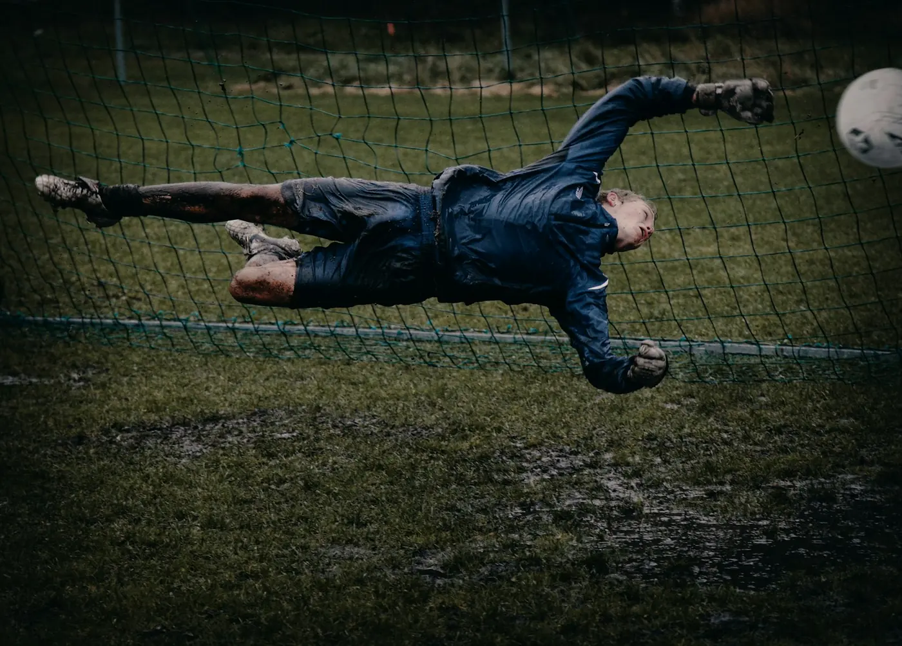

30′
Пенальти: 11 метров
Если защитник нарушит правила в своей штрафной площади, назначают пенальти. Мяч ставят на точку в 11 метрах от ворот. Сильно пробитый мяч долетает до ворот примерно за 0,4 секунды.
Встань в ворота! Нажми «Удар», а потом жми на левую или правую половину картинки, куда летит мяч. Можно угадать заранее, как настоящие вратари.
0отбито0голов

← влево · вправо →
